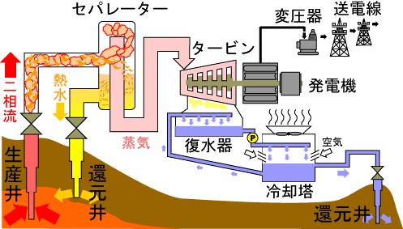
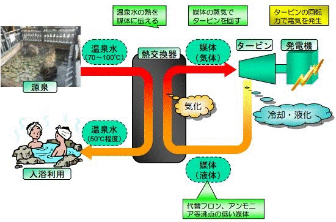
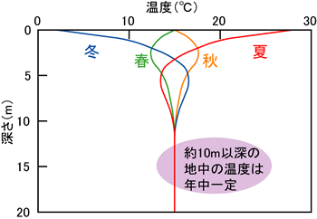
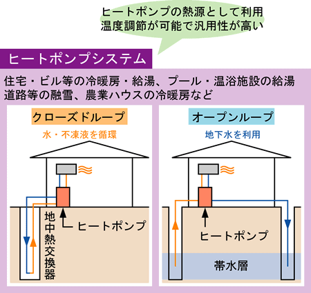

火山地帯等の高温高圧地下蒸気を利用して発電するシステムで、日本は世界３位の賦存量があり（３３００万㎾）、ベースロード運転できるメリットがある。しかし、政府があまり力を入れず、これまでの累計実績は５２万ＫＷ（２０１４年）で、ほとんど伸びていない。また、温泉熱発電もあるが、出力は数十～百ＫＷと小さく、採算性に乏しい。奈良県では十津川温泉で検討されているが、進捗していないとのことである。
以下に、地熱発電及び温泉発電の概要図を示す。
地熱発電概略図（出典：資源エネルギー庁ホームページ）

温泉発電[バイナリー発電]の仕組み（出典：兵庫県農政環境部）
外気温は季節変動するが、地中では変動が少なく、深さ１０ｍ以深では年平均気温程度で一定となる。地中熱利用はこれを利用したシステムで、ヒーポンプ、熱伝導（例えば、竪穴住居）、空気循環（地中チューブ）、ヒートパイプ（例えば、融雪）があるが、ヒートポンプシステムが主流である。

地中熱利用促進協会HPより引用
冬季の外気温が低く、暖房期間の長い欧米では、実績が多くあるが、日本では2013年までに地中熱ヒートポンプシステムを導入した施設件数は累計1,513件となっており、地域別でみると、北海道が426件と最も多い。
奈良県エネルギー政策課に１１月３０日ヒアリングしたところによると、３年前から設備に対し、２分の１補助をつけているが、今のところ申請ないとのこと（事業所再生可能エネルギー等熱利用促進事業補助）。

地中熱利用促進協会HPより引用